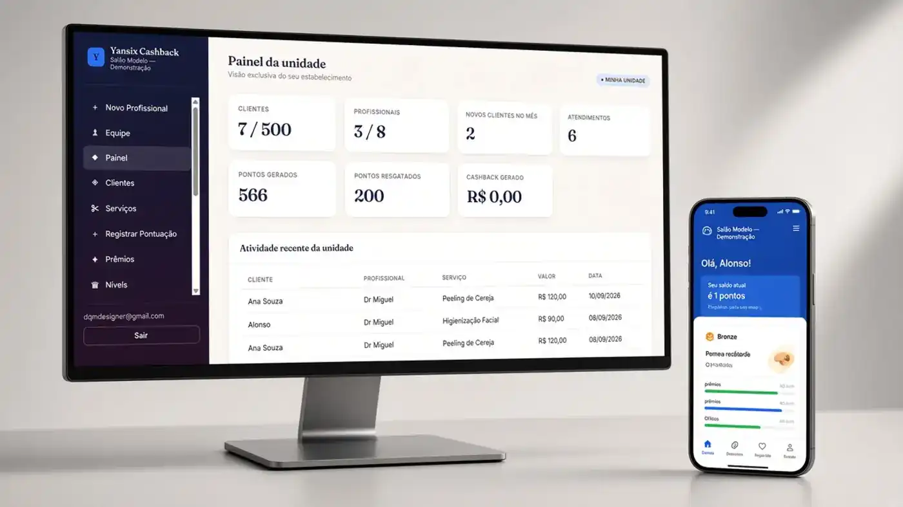

Agenda e status dos atendimentos
Registre e organize compromissos, acompanhe os status e mantenha uma visão mais clara da rotina. Os registros podem ser criados, editados e removidos conforme as permissões do seu perfil.
YANSIX · Agenda + Cashback
Uma solução prática para negócios que trabalham com horário marcado: organize a agenda, acompanhe indicadores de atendimento e fortaleça a fidelização com pontos e cashback — sem complicar a rotina.

PRINCIPAIS FUNCIONALIDADES
Tenha mais clareza sobre o que está marcado, o que aconteceu e como criar oportunidades para que seus clientes voltem.
Registre e organize compromissos, acompanhe os status e mantenha uma visão mais clara da rotina. Os registros podem ser criados, editados e removidos conforme as permissões do seu perfil.
Acompanhe atendimentos concluídos, faltas e cancelamentos. Consulte a taxa de conversão e compare resultados por período, profissional e serviço para apoiar decisões mais informadas.
Estruture uma experiência de fidelização com pontos e recompensas para incentivar o relacionamento contínuo com os clientes, de acordo com as regras definidas para o seu negócio.
Confira atendimentos processados e identifique registros de cashback que precisam de atenção, ajudando a equipe a acompanhar o fluxo operacional.
COMO AJUDA NO DIA A DIA
A tecnologia ajuda a transformar informações espalhadas em uma rotina mais organizada e fácil de acompanhar.
Tenha os compromissos e seus status em um fluxo de acompanhamento da operação.
Use filtros e indicadores para enxergar o desempenho dos atendimentos no período selecionado.
Conecte o relacionamento com pontos e cashback conforme a estratégia de fidelidade do negócio.
PREÇO TRANSPARENTE
Tenha acesso à proposta Agenda + Cashback por um valor mensal acessível e converse com a YANSIX para entender o processo de contratação.
Agenda de atendimentos, indicadores operacionais e recursos de fidelização em uma única solução.
Valor anunciado: R$ 45 por mês. Confirme com a equipe as condições de contratação, implantação e eventuais serviços adicionais.
DÚVIDAS FREQUENTES
O valor anunciado é de R$ 45 por mês. Fale com a YANSIX para confirmar as condições de contratação e implantação.
Você pode organizar os agendamentos e acompanhar os status dos atendimentos, incluindo realizados, faltas e cancelamentos.
Sim. A solução oferece indicadores que podem ser analisados por período, profissional e serviço, incluindo a taxa de conversão do período filtrado.
A plataforma reúne recursos de pontos, prêmios e cashback para apoiar ações de fidelização. As regras de recompensa são definidas conforme a operação do negócio.
É indicada para operações que trabalham com agendamentos e relacionamento recorrente com clientes. Converse com a equipe para avaliar se os recursos atendem à sua necessidade.
Conheça o YANSIX Agenda + Cashback e veja como a solução pode se encaixar na rotina do seu negócio.